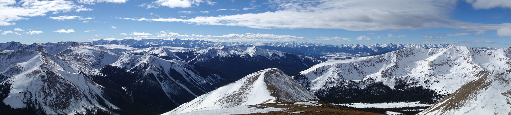

Descubre las mejores rutas
Organizate y planea las mejores rutas con nuestra ayuda
Aprovecha nuestros itinerarios y disfruta con tu familia y amigos de las más famosas y divertidas rutas de Estados Unidos.


3945 km
RUTA 66
La Ruta principal y mas famosa de Estados Unidos, con una longitud de 3.945 kilómetros, atraviesa 8 estados desde el punto de salida en Chicago hasta finalizar en Los Ángeles.

1916 km
RUTA 24
La Ruta 24 se inauguró a finales de 1910. Comienza en Washington D.C y culmina en Miami. Pasa por tres estados y la red completa de carreteras de esta ruta cubre 1916 kilómetros.

1036 km
RUTA 61
No es tan famosa como la 66 pero es tan americana o más. Se conoce como la Great River Road, y se inauguró a finales de 1930. Comienza en la cabecera del Misisipi y culmina en Nueva Orleans.

5153 km
RUTA 38
Esta ruta es menos transitada debido a sus mas de 5000 kilometros de carreteras interminables que recorren de la costa del Oceano Atlántico a la del Pacífico.